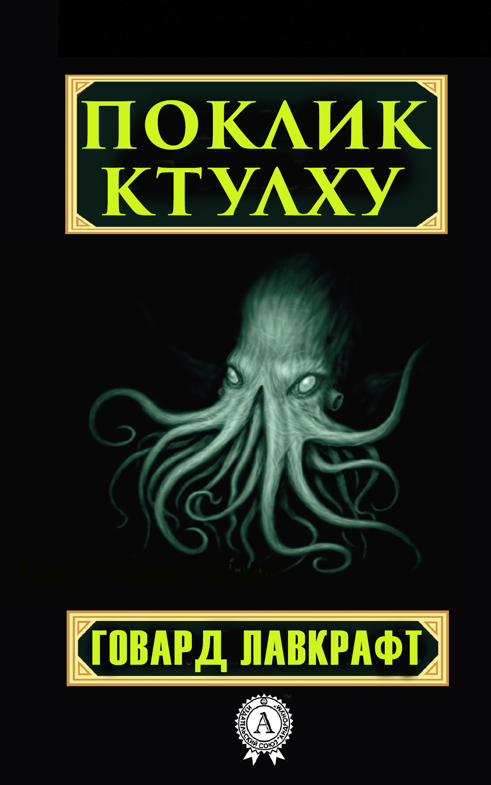

«Поклик Ктулху» — збірник розповідей, пов'язаних з морським чудовиськом Ктулху.
| Персонажі твору | |
|---|---|
| Ім'я | Роль |
| Ктулху | Головний антагоніст твору |
| Френсіс Терстон | Дослідник |
| Кастро | Моряк |
Ктулху — один із найвідоміших персонажів міфів Лавкрафта.
місто Р'льєх.
Його пробудження може призвести до катастрофічних наслідків.
Р'льєх знаходиться посеред океану.
Його геометрія суперечить законам людського розуміння.
Саме там очікує свого часу Ктулху.